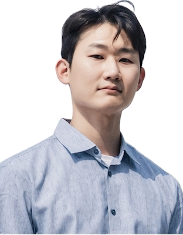

웹·웹뷰 서비스의 성능 최적화와 AI 기반 개발 생산성 개선을 함께 다루는 Frontend Engineer

정다훈
Frontend Engineer
휴대폰
010-4346-0429
Email
dahun428@naver.com
주소
경기 구리시 인창동
Portfolio
github.com/dahun428-fx
요약
6년차 프론트엔드 개발자. React·Next.js 웹·웹뷰 서비스의 성능 최적화부터 AI 기반 개발 프로세스 개선까지 함께 다루는 Frontend Engineer입니다. 미디어 쿼리 기반 반응형 웹, WebView 호환성 검증, GitLab MR·AI 코드 리뷰를 실무로 운용했고, AWS S3·EC2 배포 파이프라인을 활용·운영하며 FE 역할 범위를 API·배포까지 이해하는 방식으로 확장해 왔습니다. 대규모 트래픽 서비스의 웹·웹뷰 사용자 여정을 성능과 품질 자동화로 뒷받침하는 환경에서 이 역량을 더 깊이 발전시키고 싶습니다.
핵심 성과
① 성능 최적화 · 대규모 서비스
성능 개선 주도 · 반응형 웹 · 대규모 B2B 커머스 · SSR·CSR 렌더링 전략
→ 페이지 접근 8초 → 2초 단축 · 글로벌 B2B 커머스 전면 전환 · 월 방문자 약 112만(GA·Adobe Analytics 기준)
② AI 개발 프로세스 · 공통 모듈
AI 기반 개발 표준화 · GitLab MR + AI 코드 리뷰 · Playwright CI 게이트 · Config-Driven UI
→ Playwright E2E 하네스 단독 구축, 팀 10명 전원의 개발 절차로 정착, 세미나 12회·기술 문서 48건
팀의 AI 활용 개발 방식 전반을 설계·리드 — AI 생성 코드 검증을 위한 하네스 엔지니어링 구축, FE AX 개발 표준 단독 설계, GitLab MR 기반 AI 코드 리뷰 도입, 품질·운영 자동화와 팀 지식 자산화 주도
[문제]
AI 코딩 에이전트를 도입하면 병목은 코드를 만드는 속도가 아니라 만들어진 코드를 무엇으로 믿을지로 옮겨갑니다. 도입은 됐지만 팀원마다 활용 방식이 달랐고, AI가 만든 코드를 누가 어떤 기준으로 신뢰할 것인지가 정의돼 있지 않았습니다. 그 위에 수동 발화 테스트·반복 UI 개발·배포 전후 확인·운영 지표 조회의 병목이 겹쳐 있었습니다.
[주요 실행]
하네스 엔지니어링 구축발화 테스트·LLM 응답 검증·타입/빌드·배포 전후 확인을 자동 실행되는 검증 하네스로 통합하고 Playwright E2E를 배포 파이프라인의 필수 게이트로 편입 — 사람이 판정하지 않아도 같은 기준으로 품질이 걸러지는 구조
GitLab MR 기반 AI 코드 리뷰 도입GitLab MR 양방향 코드 리뷰(작성자·리뷰어 모두 수행) 문화에 AI 코드 리뷰 도구를 MR 흐름에 편입해 활용
FE AX 개발 표준 단독 설계AI 생성 코드를 팀 전체가 같은 기준으로 검증·신뢰할 수 있도록 컨텍스트 관리·금지 패턴·보안 위험·검증 절차를 FE AX 개발 표준으로 설계, 사내 공식 문서로 채택
공통 컴포넌트 표준화Storybook 스토리 210개로 재사용 컴포넌트를 카탈로그화하고 기획자와 UI를 조기 확정해, 신규 화면 조립을 공통 컴포넌트 기반으로 전환
운영 확인 자동화GA4·PostHog 기반 운영 데이터 대시보드 구축, 배포 전후 상태와 운영 지표를 비개발 직군도 직접 확인 가능하게 전환
학습의 조직 이식외부 컨퍼런스·전문가 인사이트를 흡수해 개발 세미나 12회로 팀에 이식하고, 검증 기준·노하우를 기술 문서 48건으로 자산화해 신규 합류자도 같은 기준으로 개발 가능하게 정비
[성과]
일하는 방식의 전환10명 팀에서 단독 설계한 개발 표준과 검증 하네스가 전원의 개발 방식으로 정착, E2E 필수 게이트로 담당자 부재 시에도 같은 기준의 검증·배포 유지
인력 효율 향상반복 UI 검증을 자동 판정으로 대체하고 반복 컴포넌트 개발을 90분 → 15분(약 83%)으로 단축, 검증 인력을 개발에 재투입
협업 리드타임 단축Storybook 기반 UI 조기 확정으로 기획–개발 검증 리드타임 2일 → 1일
유지보수성 향상공통 컴포넌트 카탈로그와 개발 표준·기술 문서 48건으로 코드 일관성·인수인계 기반 확보, 운영 데이터 확인 3단계 → 1단계 자동화
기술: Codex · Claude Code · GitLab MR · AI 코드 리뷰 · Playwright · Storybook · Jest · ESLint · TypeScript · GA4 · PostHog · Jenkins · GitLab CI/CD
경력기술서
5 / 12
3. 대웅제약 | 임직원 건강검진 통합플랫폼 구축
2025.11 ~ 2026.02
[주요 업무]
2019년 레거시 검진 서비스를 React 기반 임직원 건강검진 통합플랫폼으로 현대화 — 서비스·DB 구조 분석부터 점진 전환 설계, MySQL·Spring Boot·REST API·화면 End-to-End 개발, 배포 자동화, WebView 호환성 검증까지 풀스택 총괄
[문제]
외주 중심으로 운영되던 2019년 검진 예약 레거시를, 회사가 직접 개발·운영하며 고객사에 판매할 수 있는 플랫폼으로 도약시켜야 했습니다. jQuery·Thymeleaf 화면과 Spring Boot 로직, MySQL 데이터가 강결합된 모놀리식이라 SPA로 한 번에 전환할 수 없었고, Web·Admin·App의 권한과 데이터 출력 정책도 제각각이었습니다.
[주요 실행]
서비스·데이터 구조 분석기존 소스와 DB 스키마를 분석해 화면 요청부터 Controller·Service·Query·DB·출력까지 전 구간 정리
점진 전환 구조 설계전면 재작성의 일정·회귀 리스크와 jQuery 장기 공존의 유지비·DOM 충돌을 모두 저울질한 끝에 React를 화면 단위로 공존·재사용하는 점진 전환을 직접 설계, 변경·장애 빈도를 기준으로 전환 순서 결정
풀스택 End-to-End 개발신규 건강관리 기능의 MySQL 데이터 모델, Spring Boot 서버 로직, REST API, Web/Admin 화면까지 전 구간 직접 개발
BFF 계층 신규 구축React 전용 데이터 집계·프록시 API를 Node.js로 구축, 모놀리식 BE–FE 분리 전략의 일환으로 RESTful 구조 점진 도입
AI 기반 회귀 검증82개 화면 전환의 UI 회귀 검증을 Playwright 기반 AI E2E 테스트로 자동화해 반복 UI 검증을 사람 대신 수행
배포 자동화FileZilla 수동 이관에 의존하던 배포를 개발 서버 Jenkins 파이프라인과 운영 서버 Docker 기반 Blue-Green 무중단 배포로 전환, WebView 호환성 검증 기준 수립, 반응형 웹(미디어 쿼리 기반 PC/모바일 대응) 적용
[성과]
통합플랫폼 도약2019년 레거시를 React 기반 임직원 건강검진 통합플랫폼으로 재구축하고 UI/UX 전면 개편을 주도, 신규 판매 매출 1.0억 원 기여
단독 풀스택 전환108개 페이지·82개 화면을 9주 내 단독 전환, 외주 없이는 못 고치던 서비스를 내부 개발·운영 구조로 전환
데이터-투-화면 E2E 오너십신규 건강관리 기능을 MySQL 모델부터 서버·API·화면까지 End-to-End 단독 개발
SaaS형 상품 구조고객사별 CI·메뉴·기능 노출 변경을 1주 내 대응 가능한 구조 확보
검증·배포 자동화반복 UI 검증 대부분을 AI 기반 E2E로 수행, 수동 FTP 배포를 Jenkins·Docker 파이프라인으로 전환해 배포 리드타임 10분 → 2분(약 80%) 단축, 운영 서버는 Blue-Green 방식으로 서비스 중단 없는 릴리스 확보
기술: React · TypeScript · Java · Spring Boot · REST API · MySQL · Node.js · Express · jQuery · Thymeleaf · Playwright · Jenkins · Docker · WebView
경력기술서
6 / 12
4. 한국미스미 | 글로벌 B2B 커머스 Next.js 전면 전환
2022.06 ~ 2024.10 · 3개 프로젝트 (내담씨앤씨 SI 프로젝트)
[주요 업무]
일본 본사 주도의 전 지사 아키텍처 통일 프로젝트에서 한국 팀 React 전문 개발자로서 6인 팀의 마이그레이션과 기술 의사결정을 주도 — 사용자 화면 개발에서 시작해 아키텍처·성능·다국어·배포·모니터링까지 책임 범위를 확장
[문제]
PHP·jQuery 기반 글로벌 B2B 쇼핑몰은 화면 간 결합도가 높아 기능 확장과 유지보수가 어려웠고, 긴 초기 접근 시간과 단일 렌더링 방식으로 성능과 검색 노출을 함께 최적화하기 어려웠습니다. 일본 본사의 전 지사 아키텍처 통일 결정을 계기로 한국 웹의 전면 전환을 이끌어야 하는 상황이었습니다.
[주요 실행]
한국 웹 전환 리드한국 팀에서 React를 가장 깊이 다루는 개발자로서 6인 팀의 마이그레이션을 이끌고, 일본 본사 개발자들과 일본어로 직접 소통하는 크로스보더 협업으로 전면 전환을 완료까지 견인
렌더링 경계 판단상품·검색 유입 페이지는 SEO와 초기 로드를 위해 SSR로, 로그인 후 상호작용 중심 페이지는 서버 부하·번들 비용을 고려해 CSR로 분리 — 페이지별 렌더링 비용을 기준으로 경계를 직접 판단
사용자 기능 구조화상품 비교·멀티다운로드 등 복잡한 기능을 공통 컴포넌트와 Custom Hook으로 구조화하고, Redux·브라우저 저장소로 사용자 상태 일관성 확보
성능 최적화 직접 적용Lighthouse 기반 병목 분석 후 라우트·컴포넌트 단위 code splitting·next/image 최적화·next/link prefetch·번들 청크 분할·Lazy Loading 적용
글로벌 요구 대응·관측성 운영i18next 기반 영·중·일 다국어 구조와 SEO 대응, Lighthouse·GA·Adobe Analytics·Datadog으로 성능·SEO·오류 지표화, Vercel 배포 자동화, 미디어 쿼리 기반 PC/모바일 반응형 웹 적용
[성과]
전면 전환 완수한국 법인 웹을 PHP·jQuery에서 Next.js·React·TypeScript로 전면 전환 완료, 전 지사 아키텍처 통일의 한국 파트 완수 — 기존 PHP 서비스 대비 평균 로딩 속도 약 50% 개선
성능 개선유지보수·성능 개선 프로젝트에서 Lighthouse 병목 분석과 리소스 최적화로 페이지 접근 시간 8초 → 2초 단축 / 월 방문자 약 112만(GA·Adobe Analytics 기준) 서비스
저는 복잡한 요구사항과 기술적 제약 속에서 제품의 핵심 문제를 정의하고, 적절한 구조와 실행 방향을 결정해 실제 서비스로 완성하는 Product Engineer입니다. 프론트엔드를 핵심 전문성으로 삼되, 데이터 구조와 사용자 경험, 백엔드와 LLM의 연결까지 제품 전체를 바라보며 의사결정을 주도합니다.
한국미스미 프로젝트에서는 Next.js·TypeScript 기술 리더로서 PHP·jQuery 기반 레거시 시스템의 마이그레이션을 이끌었습니다. 기존 시스템을 단순히 새로운 기술로 재구현하는 것이 아니라, 운영 중인 기능과 제약을 분석하고 향후 확장과 유지보수가 가능한 개발 구조로 전환했습니다. 삼성물산 프로젝트에서는 대용량 데이터를 처리하는 사내 프로그램을 고도화하며 데이터 흐름, 성능, 사용자 경험을 함께 고려해 문제를 해결했습니다.
대웅제약의 AI 제품에서는 시니어 개발자로 참여해 데이터 구조부터 사용자 화면까지 End-to-End로 책임졌습니다. 초기 구상 단계에서 요구사항을 기술적으로 구체화하고, 기획·LLM·백엔드 담당자와 함께 각 영역의 제약과 우선순위를 조율했습니다. 단순히 정해진 기능을 구현하는 것이 아니라, 제품이 실제 환경에서 작동하기 위해 필요한 구조와 사용자 흐름을 설계했습니다. 그 결과 제품은 현재 대웅 임직원 약 3,500명이 사용하는 서비스로 출시됐습니다.
기술 리더십의 범위도 제품 구현에만 두지 않았습니다. AI를 활용한 Product Engineering 방식을 탐구하고, 팀에 하네스 엔지니어링을 도입했습니다. AI 활용에 필요한 개발 맥락과 검증 기준을 구조화하고 이를 개발 표준으로 정착시켜, 개인의 경험에 의존하던 방식을 팀이 반복적으로 활용할 수 있는 체계로 발전시켰습니다.
제 역할은 가장 어려운 코드를 직접 작성하는 것에 그치지 않습니다. 불확실한 상황에서 방향을 결정하고, 여러 직군의 관점을 기술적으로 연결하며, 팀이 더 좋은 제품을 지속적으로 만들 수 있는 기반을 세워야 합니다. 저는 그 판단과 결과를 끝까지 책임집니다.
자기소개서
11 / 12
2. AI의 속도를 팀의 개발 역량으로 전환하다
74개 페이지의 React 전환을 2주 내에, RESTful API 29건 개발을 1주 내에 완료했습니다. 단순히 AI로 더 많은 코드를 생성한 것이 아니라, 명세 분석부터 개발·테스트·보안·배포까지 하나의 하네스 엔지니어링 체계로 연결한 결과입니다.
AI를 개발에 적용하자 새로운 병목이 나타났습니다. 제품의 맥락과 구현 기준을 매번 다시 설명해야 했고, 생성된 코드의 타입 오류와 금지 패턴, 비밀키 노출 가능성을 사람이 반복해서 확인해야 했습니다. 구성원마다 활용 방식이 달라 결과물의 품질에도 편차가 생겼습니다. 프롬프트 작성법을 공유하는 것만으로는 이 문제를 해결할 수 없다고 판단했습니다. 개발 맥락과 규칙을 재사용 가능한 자산으로 만들고, 명확한 기준으로 판단할 수 있는 영역은 시스템이 자동으로 검증하도록 방향을 전환했습니다.
먼저 디자인과 개발 맥락을 연결하는 MCP 기반 도구를 도입하고, 데이터 시각화 공통 로직과 UI 생성 기준을 SKILL.md와 Design.md로 표준화했습니다. 개발자가 반복해서 설명하던 내용을 AI가 지속적으로 활용할 수 있는 개발 자산으로 바꿨습니다. 그 결과 신기능 개발 리드타임은 1주에서 1일로, 신규 차트 개발 시간은 1시간에서 10분으로 줄었습니다.
속도 향상이 품질 저하로 이어지지 않도록 검증 체계도 구축했습니다. E2E 발화 테스트와 LLM 응답 검증, CI/CD를 하나의 흐름으로 통합하고 타입 오류·금지 패턴·비밀키 노출을 코드 편집 단계에서 자동 점검했습니다. 400여 건의 발화 테스트를 2시간 안에 수행하면서 해당 테스트 범위의 출력 오류를 0건으로 유지했고, 기존 4단계의 코드 검증 절차를 1단계로 줄였습니다.UI 회귀 테스트는 24개 시나리오와 248개 스텝을 3개 뷰포트에서 자동화했으며, 테스트 커버리지는 54%에서 84%로 높였습니다.
이 방식을 개인의 작업 방식에 머물게 하지 않았습니다. 개발 팀원 5명과 반복 오류와 검증 기준을 정리하고, 주 1회 개발자 세미나를 직접 주최·운영해 총 12회 적용 사례를 공유했습니다. 이 과정에서 48건의 기술 문서를 축적하고 AI 산출물의 형식과 검증 절차를 팀의 공통 기준으로 표준화했습니다. 작은 차트와 반복 컴포넌트에서 시작한 방식을 UI 회귀와 LLM 응답 검증을 거쳐 React 전환과 API 개발까지 단계적으로 확장했습니다.
자기소개서
12 / 12
3. 사업의 변화를 제품의 구조와 운영 방식으로 전환하다
AI코치를 10주 동안 개발해 실서비스로 완성한 뒤, 고객사마다 제공 기능을 다르게 구성하고 그 차이에 따라 가격을 책정해야 한다는 요구가 생겼습니다. 고객사별 화면을 따로 만들면 첫 납품은 빠르지만, 고객이 늘어날수록 같은 기능을 반복해서 수정하고 검증해야 합니다. 저는 기능별 가격 정책을 화면 커스터마이징이 아니라, 하나의 서비스에서 여러 상품을 운영하기 위한 제품 설계 문제로 정의했습니다.
기획·운영 담당자와 고객사별 기능 범위와 제어 기준을 정하고, 완성된 코드의 상당 부분을 다시 설계했습니다. 고객사별 테마와 기능 정책은 Base-Theme·Config-Driven UI로 분리하고, 변경되는 이유가 같은 영역만 공통화했습니다. 고객사별로 화면을 개발하던 방식을, 기획·운영 담당자가 설정값으로 상품을 구성하는 방식으로 전환했습니다.
새로운 방식은 신규 고객사 웰체크 온보딩에서 검증했습니다. 색상·CI·기능 구성을 설정으로 조합해 별도의 제품을 다시 개발하지 않고 고객사 요구를 반영했습니다. 최초 AI코치 구현 10주 대비, 웰체크 프론트엔드 커스터마이징·납품을 2주 안에 완료했습니다. 이 기간은 LLM과 백엔드 일정을 제외한 프론트엔드 납품 기준입니다.
AI코치에서 고객사별 기능 구성과 가격 정책을 분리했다면, 비즈36.5에서는 권한·메뉴·브랜딩·데이터 출력 정책까지 고객사별로 구분해야 했습니다. Spring Boot·Thymeleaf·jQuery와 MySQL 쿼리가 강하게 결합된 기존 구조에서는 고객사별 차이가 화면과 서버 로직 곳곳에 섞일 위험이 있었습니다. 하나의 제품을 유지하면서도 고객사마다 다른 사용 범위와 노출 정책을 적용할 수 있도록 경계를 다시 정했습니다.
운영 중인 서비스를 한 번에 다시 만드는 대신 React를 화면 단위로 적용하고, 공통 기능과 고객사별 정책을 분리했습니다. 사용자 권한·메뉴·브랜딩·데이터 출력 기준을 정리하면서 108개 페이지·82개 화면을 9주 동안 순차적으로 전환했습니다.운영 중인 강결합 레거시를 점진적으로 전환해, 고객사별 CI·메뉴·기능 변경을 1주 안에 처리할 수 있게 했습니다.
두 프로젝트에서 분리한 대상은 달랐습니다. AI코치에서는 고객사에 어떤 기능을 상품으로 제공할 것인지를 분리했고, 비즈36.5에서는 누가 어떤 메뉴와 데이터를 사용할 것인지를 분리했습니다. 개별 고객사의 요청을 코드에 계속 추가하지 않고, 반복되는 사업 요구를 제품의 규칙으로 바꿔 다음 고객사를 수용할 수 있게 했습니다.